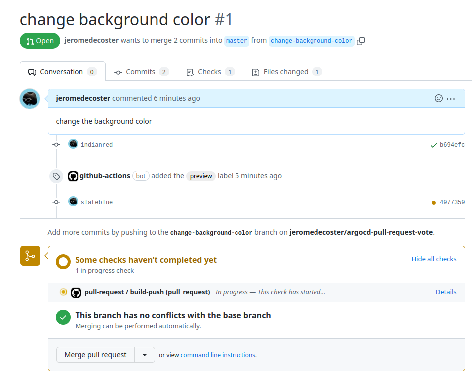
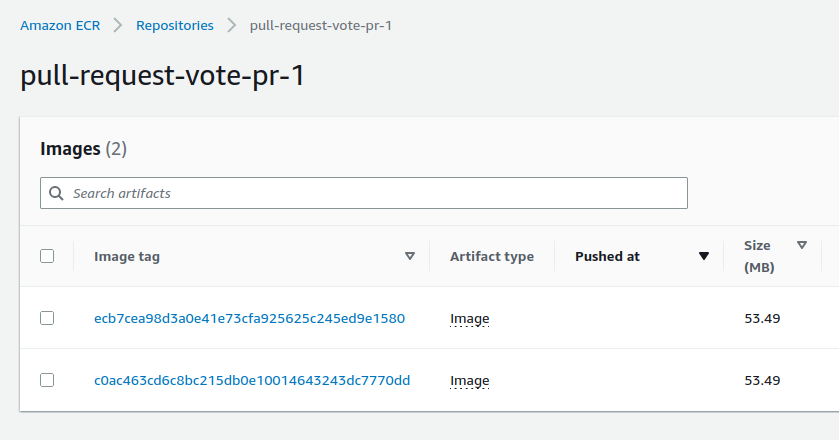

Create temporary environment from Pull Request with ArgoCD ApplicationSet
- Build a voting app with Nodejs and Postgres
- Docker images are pushed to a private ECR repository
- Deploy ArgoCD in a Kind cluster
- Each git push on the master branch will build an image and update the app in kubernetes
- Creating a Pull Request on Github will create a new environment available in a specific port
- Each git push on this git branch will build an image and update the app in this environment
- Closing the pull request will terminate the environment and clean the docker registry
The application
This project is composed by :
- vote : the voting application (a website in Nodejs)
- infra : this module is used to manage the infrastructure
- terraform : several terraform projects to manage the different stages of creation of the main project (reduce bash scripts and replace them with terraform code)
- manifests : the kubenetes templates
- argocd : the templates that define argocd applications
- workflows : the voting app use 3 github actions workflows
You can fork this 2 repositories on your machine
Important : make sure your repository is private as it will contain sensitive data !
Setup
Let’s start by initializing the infra module
The env-create script creates an .env file at the root of the project :
# create .env file
make env-create
You must modify the generated .env file with your own variables :
AWS_REGIONGITHUB_OWNERGITHUB_REPO_URL_INFRAGITHUB_REPO_URL_VOTEGITHUB_TOKEN
You need to create a Github Token
You need to select repo :

You need to select admin:public_key :

This Github Token is used by Terraform’s github provider :
provider "github" {
owner = var.github_owner
token = var.github_token
}
To assign an SSH key to your Github account :
resource "github_user_ssh_key" "ssh_key" {
title = var.project_name
key = tls_private_key.private_key.public_key_openssh
}
Let’s now initialize terraform projects :
# terraform init (upgrade) + validate
make terraform-init
Setup the infrastructure
# terraform create ecr repo + ssh key
make infra-create
Terraform is used to :
- Create an SSH key and add it to your Github account so you can interact with a private repository
- Create an ECR repository
The github key is created :
Start Kind, install ArgoCD
# setup kind + argocd
make kind-argocd-create
Terraform is used to :
- Start a Kind cluster
- Install and setup ArgoCD
kubectl get ns
NAME STATUS AGE
argocd Active 10s
default Active 80s
kube-node-lease Active 90s
kube-public Active 90s
kube-system Active 90s
local-path-storage Active 70s
We open the ArgoCD web interface :
# open argocd (website)
make argocd-open
Create namespaces + secrets
# create namespaces + secrets
make secrets-create
Terraform is used to :
- Create namepsaces and secrets
- Manifests used for namespaces
- Manifests used secrets
- Manifests used jobs
The ECR token is used to allow Kubernetes to download your images from a private ECR repository
The token generated by AWS is only valid 12 hours !
We therefore need to create a CronJob which will update this token every 10 hours
For this demo a new token is requested every 3 minutes
The aws-ecr-auth-docker-config-updater job is used to update the ECR credentials :
schedule: "*/2 * * * *"
jobTemplate:
spec:
template:
spec:
serviceAccountName: aws-ecr-auth-docker-config-updater
restartPolicy: Never
volumes:
- emptyDir:
medium: Memory
name: store
initContainers:
- image: amazon/aws-cli
name: get-token
envFrom:
- secretRef:
name: aws-access-keys
volumeMounts:
- mountPath: /store
name: store
command:
- /bin/sh
- -ce
- aws ecr get-login-password --region ${aws_region} > /store/token
containers:
- image: bitnami/kubectl
name: kubectl
volumeMounts:
- mountPath: /store
name: store
command:
- /bin/sh
- -c
- |-
date "+%Y-%d-%m %H:%M:%S config-updater"
DATE=$(date "+%Y-%m-%dT%H:%M:%SZ")
kubectl create secret docker-registry aws-ecr-auth-docker-config \
--docker-server=${docker_server} \
--docker-username=AWS \
--docker-password="$(cat /store/token)" \
--dry-run=client \
--namespace vote \
--output json |
jq --arg v $DATE 'del(.metadata.creationTimestamp) | .metadata.annotations.updateTimestamp = $v' |
kubectl apply -f -
The previously created secret is only valid in a single namespace
In our project, each Pull Request will create a new environment within a dedicated namespace
It is therefore necessary to copy this automatically updated secret into these new namespaces
A trick is to create a job that runs continuously and duplicates the referral secret every x seconds in the other namespaces :
template:
spec:
serviceAccountName: aws-ecr-auth-docker-config-replicator
restartPolicy: Never
containers:
- image: bitnami/kubectl
name: kubectl
command:
- /bin/sh
- -c
- |-
while true; do
date "+%Y-%d-%m %H:%M:%S config-replicator"
kubectl get ns -o custom-columns=:.metadata.name |
grep vote-pr |
while read ns; do
kubectl get secret aws-ecr-auth-docker-config \
--namespace vote \
--output json |
jq "del(.metadata | .resourceVersion, .uid) | .metadata.namespace=\"$ns\"" |
kubectl apply -f -
done
sleep 10;
done
Let’s test our job with this command in the terminal :
watch -n 1 kubectl get secret -A
The output :
NAMESPACE NAME TYPE DATA AGE
argocd argocd-initial-admin-secret Opaque 1 4m0s
argocd argocd-notifications-secret Opaque 0 6m0s
argocd argocd-secret Opaque 5 6m0s
argocd github-token Opaque 1 10s
vote aws-access-keys Opaque 2 10s
vote aws-ecr-auth-docker-config kubernetes.io/dockerconfigjson 1 10s
In an other terminal window we create a new namespace named vote-pr-test :
kubectl create ns vote-pr-test
Our secret is added a few seconds later :
NAMESPACE NAME TYPE DATA AGE
argocd argocd-initial-admin-secret Opaque 1 5m0s
argocd argocd-notifications-secret Opaque 0 7m0s
argocd argocd-secret Opaque 5 7m0s
argocd github-token Opaque 1 40s
vote-pr-test aws-ecr-auth-docker-config kubernetes.io/dockerconfigjson 1 1s
vote aws-access-keys Opaque 2 40s
vote aws-ecr-auth-docker-config kubernetes.io/dockerconfigjson 1 40s
We can see our aws-access-keys secret with this command :
kubectl get secret aws-access-keys -n vote -o yaml
And the aws-ecr-auth-docker-config secret with this command:
kubectl get secret aws-ecr-auth-docker-config -n vote -o json |
jq -r '.data[".dockerconfigjson"]' |
base64 -d
Build manifest files from templates
# create files using templates
make templates-create
Terraform is used to :
- Build some files from templates
- Inject variables within ArgoCD applications
- Inject variables within kustomization.yaml
Important : generated files must be added to your git repository :
git add . && git commit -m update && git push -u origin master
The vote repository
When you push a commit to the vote repository, the cd.yml github workflow will build the docker image and push it to ECR :
- name: Build, tag, and push image to Amazon ECR
id: build-image
run: |
log() { echo -e "\e[30;47m ${1} \e[0m ${@:2}"; }
VERSION=${{ env.VERSION }}
log VERSION ${VERSION}
TAG_VERSION=${{ steps.login-ecr.outputs.registry }}/${{ env.REPOSITORY_NAME }}:${VERSION}
log TAG_VERSION ${TAG_VERSION}
TAG_SHA=${{ steps.login-ecr.outputs.registry }}/${{ env.REPOSITORY_NAME }}:${GITHUB_SHA}
log TAG_SHA ${TAG_SHA}
cd vote
docker image build --tag ${TAG_VERSION} --tag ${TAG_SHA} .
docker push ${TAG_VERSION}
docker push ${TAG_SHA}
The building step :
Then create or replace the kustomization.yaml template in the /manifests/overlays/master/ path of the argocd-pull-request-infra repository:
- name: Push to infra repo
env:
OVERLAY_PATH: "manifests/overlays/master"
run: |
cd infra
mkdir --parents ${{ env.OVERLAY_PATH }}
export vote_image=${{ env.TAG_VERSION }}
export vote_version=${{ env.VERSION }}
export vote_nodeport=30000
envsubst < manifests/overlays/.tmpl/kustomization.yaml > ${{ env.OVERLAY_PATH }}/kustomization.yaml
git config user.name github-actions
git config user.email github-actions@github.com
git add .
git commit -m "github actions: ${{ env.OVERLAY_PATH }}"
git push
The ECR repository contains now our docker image defined by 2 tags :
Master Application
In our argocd-pull-request-infra project, we create our ArgoCD Application via this command :
make master-app-create
It installs the application previously generated via this template :
apiVersion: argoproj.io/v1alpha1
kind: Application
metadata:
name: ${project_name}-master
namespace: argocd # /!\ important
finalizers:
- resources-finalizer.argocd.argoproj.io
spec:
project: default
source:
repoURL: ${github_repo_url_infra}
targetRevision: HEAD
path: manifests/overlays/master
destination:
server: https://kubernetes.default.svc
namespace: vote # default
syncPolicy:
syncOptions:
- CreateNamespace=true
automated:
selfHeal: true
prune: true
It is important to note that the targeted path is manifests/overlays/master
Its content was generated by the Push to infra repo step of the workflow cd.yml of the repository vote
The application is being installed :
The application is installed correctly :
We open our browser on http://0.0.0.0:9000 :
We can query the application type with kubectl :
kubectl get application -n argocd
NAME SYNC STATUS HEALTH STATUS
pull-request-master Synced Healthy
Pull Request ApplicationSet
We create our ApplicationSet via this command :
make pull-request-appset-create
The ApplicationSet is declared but nothing new is visible yet within the ArgoCD interface :
We can query the applicationset type with kubectl :
kubectl get applicationset -n argocd
NAME AGE
pull-request-pr 50s
It installs the ApplicationSet generated previously via this template :
apiVersion: argoproj.io/v1alpha1
kind: ApplicationSet
metadata:
name: ${project_name}-pr
namespace: argocd
finalizers:
- resources-finalizer.argocd.argoproj.io
spec:
generators:
- pullRequest:
github:
# gitHub organization or user
owner: ${github_owner}
# The Github repository
repo: ${github_repo_name_vote}
# reference to a secret containing an access token
tokenRef:
secretName: github-token
key: token
# labels is used to filter the PRs that you want to target
labels:
- preview
requeueAfterSeconds: 90
# https://argo-cd.readthedocs.io/en/stable/operator-manual/applicationset/Generators-Pull-Request/#template
template:
metadata:
name: '${project_name}-{{branch}}-{{number}}'
namespace: argocd
spec:
project: default
source:
repoURL: ${github_repo_url_infra}
# targetRevision: '{{head_sha}}'
path: manifests/overlays/pr-{{number}}
destination:
server: https://kubernetes.default.svc
namespace: vote-pr-{{number}} # /!\ important : must be uniq
syncPolicy:
syncOptions:
- CreateNamespace=true
automated:
selfHeal: true
prune: true
It is important to note that the targeted path is manifests/overlays/pr-{{number}}
Its content was generated by the step Push to infra repo of the workflow pull-request.yml of the repository vote :
- name: Push to infra repo
run: |
cd infra
mkdir --parents ${{ env.OVERLAY_PATH }}
export vote_namespace=vote-pr-${{ github.event.pull_request.number }}
export vote_image=${{ env.TAG_SHA }}
export vote_version=${GITHUB_SHA}
export vote_nodeport=${{ env.WEBSITE_PORT }}
envsubst < manifests/overlays/.tmpl/kustomization.yaml > ${{ env.OVERLAY_PATH }}/kustomization.yaml
git config user.name github-actions
git config user.email github-actions@github.com
git add .
git commit -m "github actions: ${{ env.OVERLAY_PATH }}"
git push
The kustomization.yaml file will be generated in the path defined by :
env:
OVERLAY_PATH: "manifests/overlays/pr-${{ github.event.pull_request.number }}"
First Pull Request using github website
Back to our argocd-pull-request-vote project
Our goal is to update the background color of the website
We are on the master branch :
git branch
* master
We create a new branch change-background-color using the checkout command :
git checkout -b "change-background-color"
We change the color in the main.css file :
body {
- background-color: #cfd8dc;
+ background-color: indianred;
font-size: 1em;
overflow: hidden;
}
We commit and push this new branch :
git add .
git commit -m indianred
git push --set-upstream origin change-background-color
We create the Pull Request by clicking this button :
We change the Pull Request title add this comment :
The Pull Request is created :
The pull-request.yml workflow is started :

A new ECR repository is created :
This ECR repository contains a docker image defined by 1 tag :
- The git commit SHA-1
The infra repository is updated :
The preview label is added :
Managing labels documentation
The Pull Request with preview label is detected by ArgoCD
The Application pull-request-change-background-color-1 is created :
After a few moments we can open http://0.0.0.0:9001 :

The kustomization.yaml file is the key to generating the environment :
bases:
- ../../base
namespace: vote-pr-1
patches:
- target:
kind: Service
name: vote
namespace: vote
patch: |-
- op: replace
path: /spec/ports/0/nodePort
value: 30001
patchesStrategicMerge:
- |-
apiVersion: apps/v1
kind: Deployment
metadata:
name: vote
namespace: vote
spec:
template:
spec:
containers:
- name: vote
image: xxxxx.dkr.ecr.xxx.amazonaws.com/pull-request-vote-pr-1:c0ac463cd6c8bc215db0e10014643243dc7770dd
env:
- name: VERSION
value: c0ac463cd6c8bc215db0e10014643243dc7770dd
We repeat these steps to change the color to slateblue :
body {
- background-color: #indianred;
+ background-color: slateblue;
font-size: 1em;
overflow: hidden;
}
The pull-request workflow is started again :

A new docker image is added :

We reload our browser tab http://0.0.0.0:9001 :
Second Pull Request using github cli
Our new goal is to add a title to the website
Important : make sure we start from the master branch to create our new branch
git checkout master
git branch
change-background-color
* master
We create a new branch add-title using checkout :
git checkout -b "add-title"
We uncomment the div in the index.njk file :
- {# <div class="title">Voting App</div> #}
+ <div class="title">Voting App</div>
We commit and push this new branch :
git add .
git commit -m title
git push --set-upstream origin add-title
We create the Pull Request with the gh pr create command :
gh pr create --title "add-title" --body "add a title"
The Pull Request is created :
The pull-request workflow is started :
The workflow is completed :
A new ECR repository is created :
The infra repository is updated
The Pull Request associated with the preview label is detected by ArgoCD
The application pull-request-add-title-2 is created :
After a few moments we can open http://0.0.0.0:9002 :
Merging to master using github website
We merge the #2 Pull Request by clicking this button :
To disable the cd.yml workflow, we add [no ci] to the commit message :
On our local machine we switch to the master branch then pull the remote content :
git checkout master
git pull
Then we update the application version :
- "version": "0.0.1",
+ "version": "0.0.2",
We commit and push this update :
git add .
git commit -m 0.0.2
git push
The workflow is started :
After a few moments the overlays/master/kustomization.yml file is updated :
bases:
- ../../base
# /!\ important !
# https://kubectl.docs.kubernetes.io/references/kustomize/builtins/#_namespacetransformer_
namespace:
patches:
- target:
kind: Service
name: vote
namespace: vote
patch: |-
- op: replace
path: /spec/ports/0/nodePort
value: 30000
patchesStrategicMerge:
- |-
apiVersion: apps/v1
kind: Deployment
metadata:
name: vote
namespace: vote
spec:
template:
spec:
containers:
- name: vote
image: xxxxx.dkr.ecr.eu-west-3.amazonaws.com/pull-request-vote:0.0.2
env:
- name: VERSION
value: 0.0.2
We reload the URL http://0.0.0.0:9000 to see that the website has changed :
The pull-request-close.yaml workflow is triggered when a Pull Request is closed :
on:
pull_request:
types: [closed]
It deletes the previously created ECR repository :
aws ecr delete-repository --repository-name ${{ env.REPOSITORY_NAME }} --force
The pull-request-vote-pr-2 repository is deleted :
Merging to master using github cli
We merge the #1 Pull Request by using the pr merge command :
gh pr merge 1 --squash --subject '[no ci]'
The -s, --squash option commits into one commit and merge it into the base branch
The Pull Request is merged ans closed :
The workflow is completed :
The pull-request-vote-pr-1 repository is deleted :
The pull-request-change-background-color-1 Application is removed :
git checkout master
git pull
Then I update the application version :
- "version": "0.0.2",
+ "version": "0.0.3",
We commit and push this update :
git add .
git commit -m 0.0.3
git push
A new docker image is added :

We reload the URL http://0.0.0.0:9000 to see that the website has changed :
Cleaning
This demonstration is now over, we are destroying the resources :
# destroy master application
make master-app-destroy
# terraform destroy namespaces + secrets
make secrets-destroy
# terraform destroy kind + argocd
make kind-argocd-destroy
# terraform destroy ecr repo + ssh key
make infra-destroy